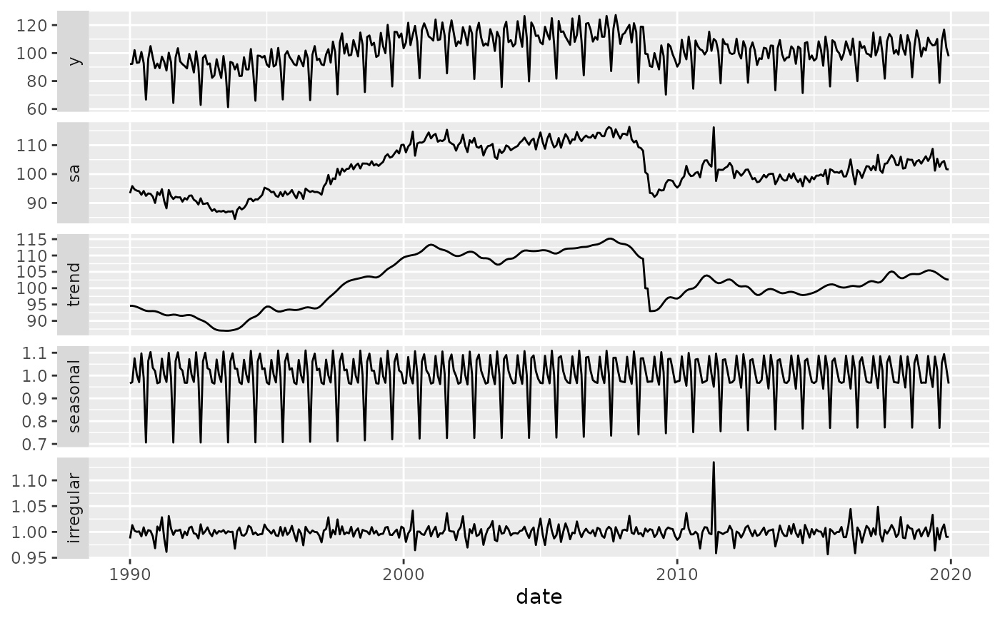
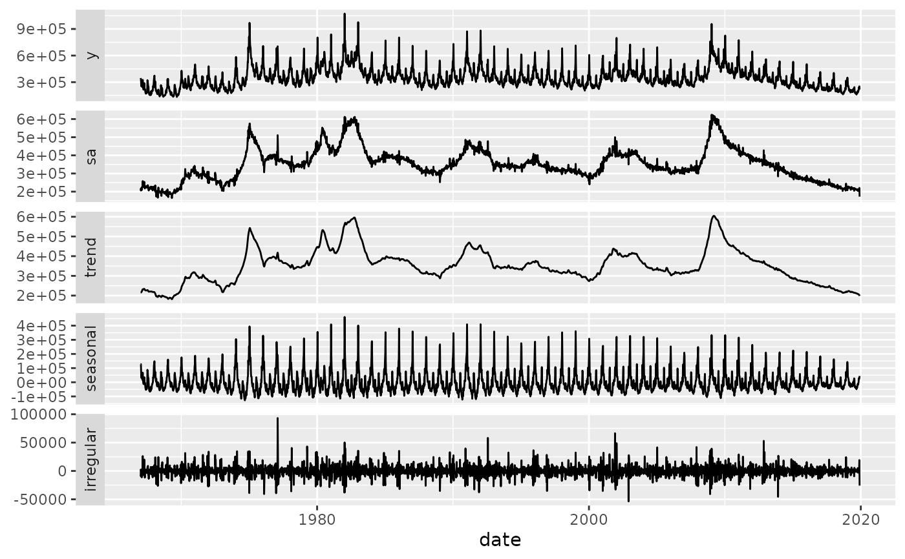

Plot Seasonal Adjustment Objects
Usage
# S3 method for class 'JD3_X13_OUTPUT'
autoplot(
object,
components = c("y", "sa", trend = "t", seasonal = "s", irregular = "i"),
forecast = FALSE,
...
)
# S3 method for class 'JD3_TRAMOSEATS_OUTPUT'
autoplot(
object,
components = c("y", "sa", trend = "t", seasonal = "s", irregular = "i"),
forecast = FALSE,
...
)
# S3 method for class 'JD3_X13_RSLTS'
autoplot(
object,
components = c("y", "sa", trend = "t", seasonal = "s", irregular = "i"),
forecast = FALSE,
...
)
# S3 method for class 'JD3_TRAMOSEATS_RSLTS'
autoplot(
object,
components = c("y", "sa", trend = "t", seasonal = "s", irregular = "i"),
forecast = FALSE,
...
)
# S3 method for class 'JD3_Object'
autoplot(
object,
components = c("y", "sa", trend = "t", seasonal = "s", irregular = "i"),
forecast = FALSE,
...
)
# S3 method for class 'hf_decomposition'
autoplot(
object,
components = c("y", "sa", trend = "t", seasonal = "s", irregular = "i"),
dates = NULL,
...
)Arguments
- object
A seasonal adjustment model (from rjd3x13, rjd3tramoseats, or rjd3highfreq).
- components
Components to display. Can be
"y"(input time series),"sa"(seasonally adjusted),"t"(trend-cycle),"y_cal"(calendar-adjusted),"s"(seasonal),"i"(irregular), and"cal"(calendar). The vector can be named to change the strip label.- forecast
Logical indicating whether the forecast series should be plotted (default is
FALSE). Ignored for"hf_decomposition"objects (rjd3highfreq).- ...
Additional arguments passed to methods.
- dates
For
"hf_decomposition"objects (rjd3highfreq), a numeric or date vector corresponding to the time series. IfNULL, a sequence of integers is used. For models created withrjd3highfreq::fractional_airline_decomposition()orrjd3highfreq::multi_airline_decomposition(), theseries_timeparameter is used if available.
Examples
autoplot(rjd3x13::jx13(ipi_c_eu[, "FR"]))

# \donttest{
hf_data <- usclaims[usclaims$date <= "2019-12-01",]
mod_hf <- rjd3highfreq::fractional_airline_decomposition(
hf_data[, "Initial claims"],
period = 52,
series_time = hf_data[, "date"]
)
autoplot(mod_hf, dates = usclaims$date[usclaims$date <= "2019-12-01"])

# }